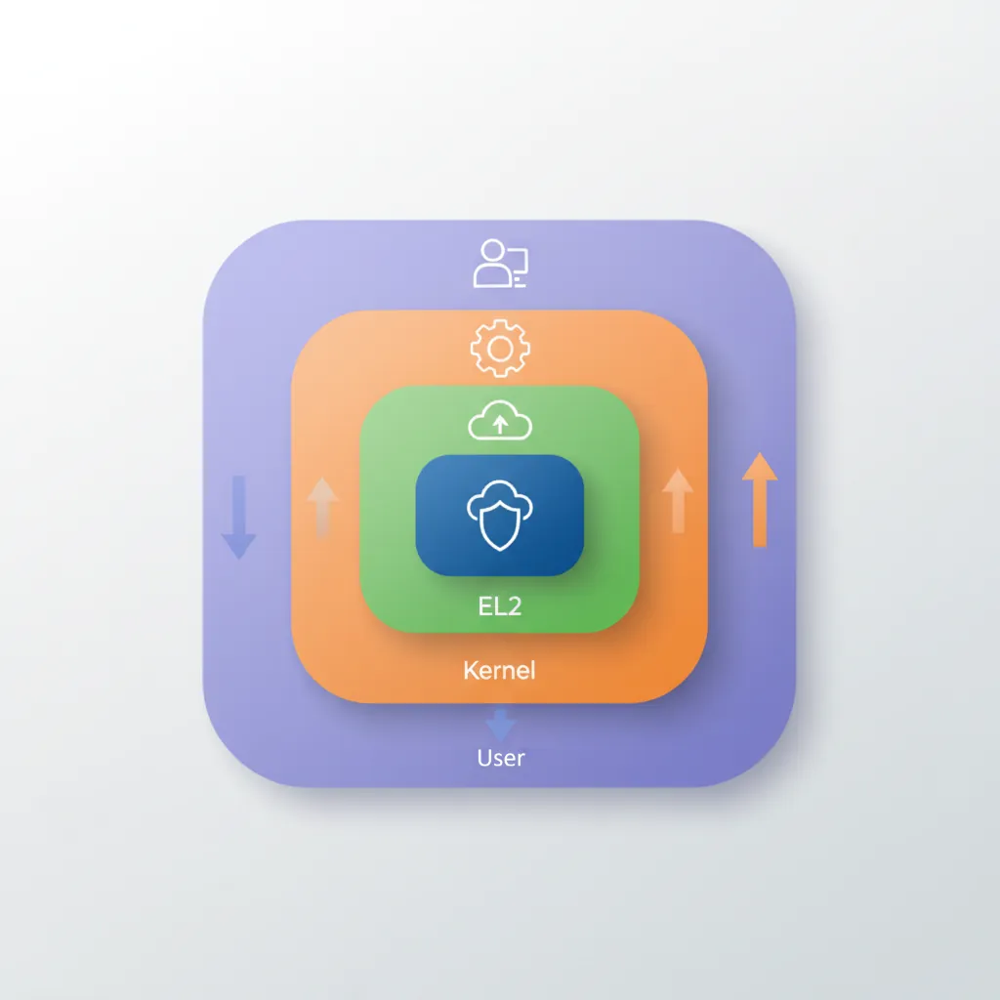
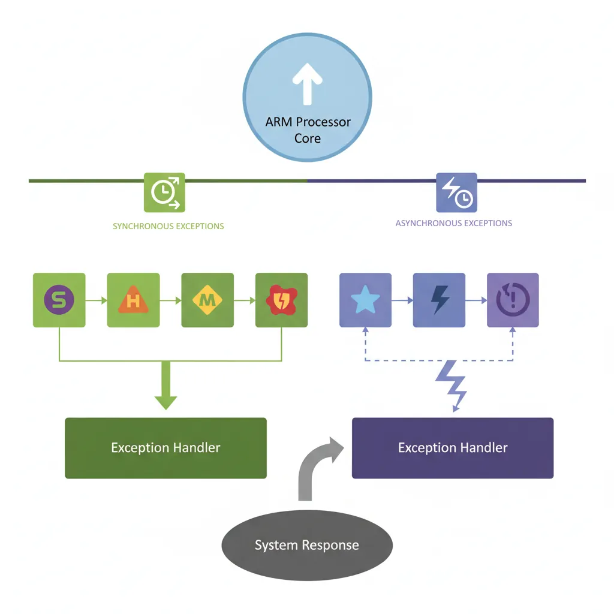
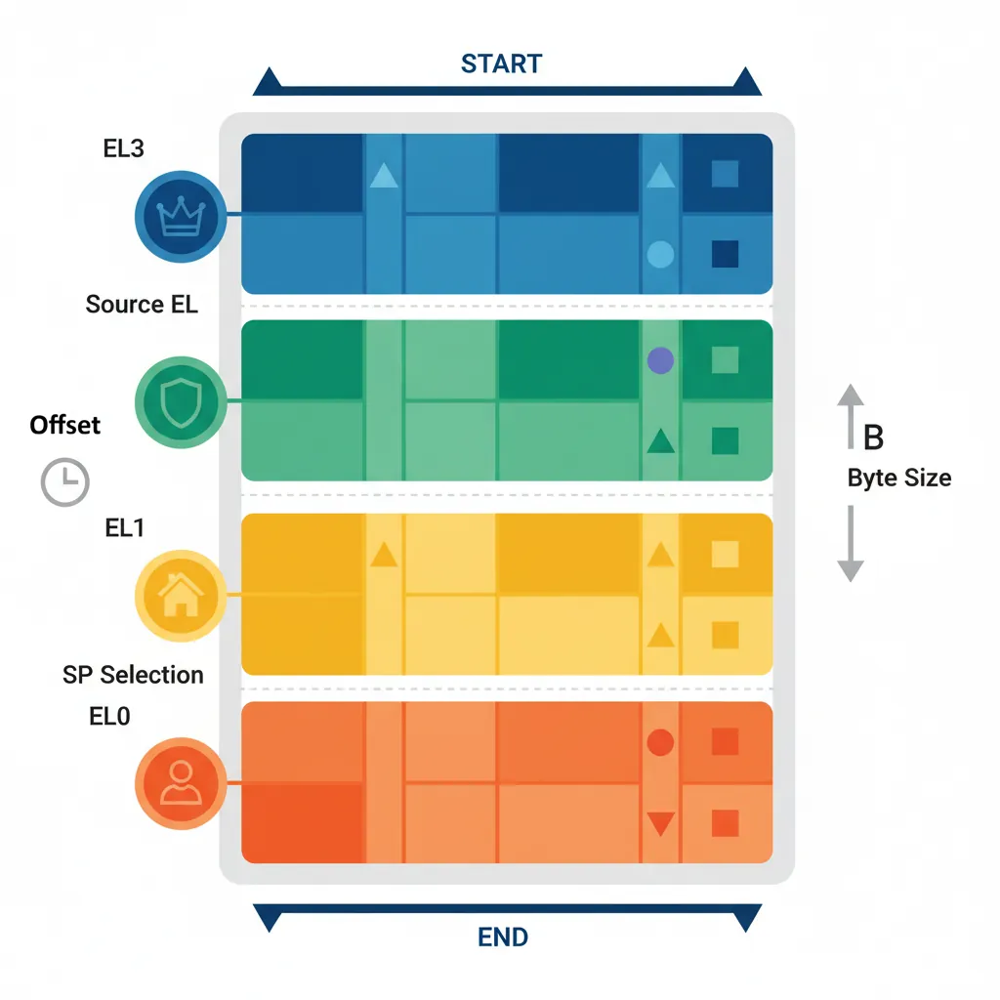
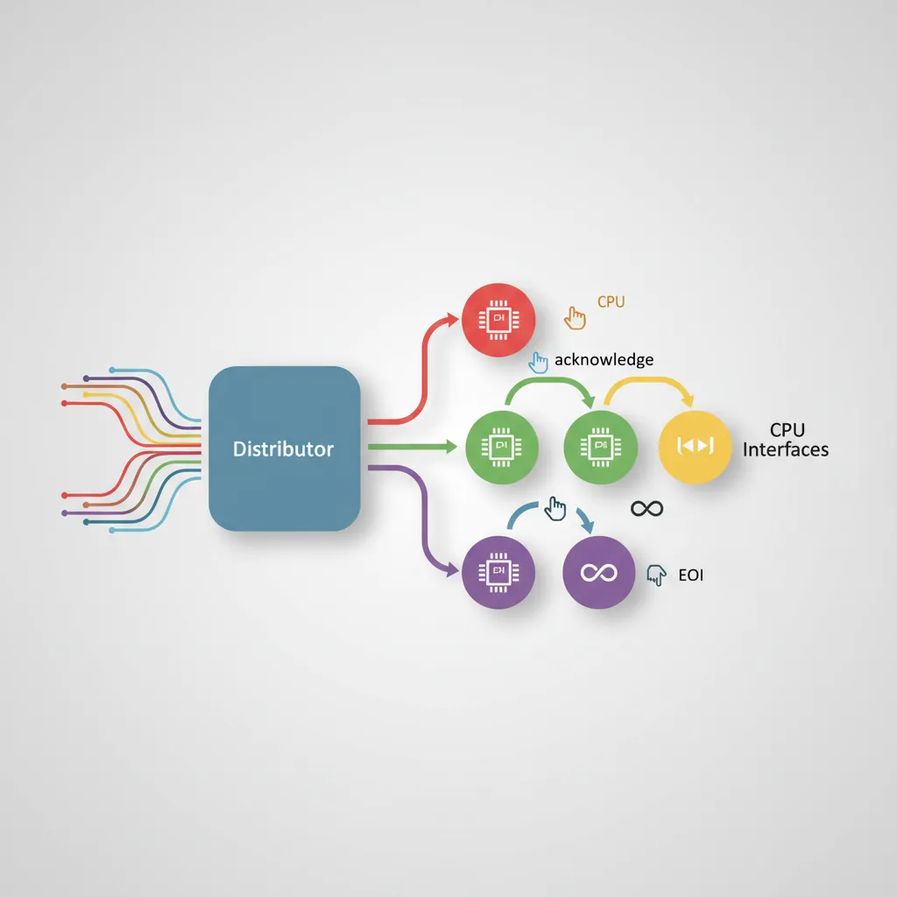
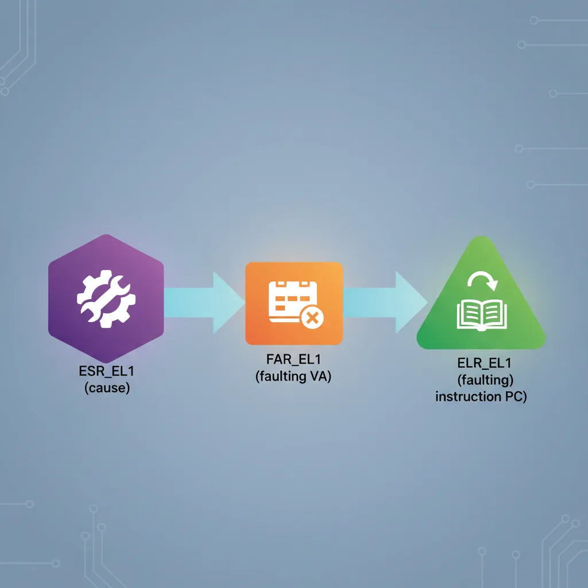

Introduction & Privilege Model
ARM Assembly Mastery
Architecture History & Core Concepts
ARMv1→v9, RISC philosophy, profilesARM32 Instruction Set Fundamentals
ARM vs Thumb, registers, CPSR, barrel shifterAArch64 Registers, Addressing & Data Movement
X/W regs, addressing modes, load/store pairsArithmetic, Logic & Bit Manipulation
ADD/SUB, bitfield extract/insert, CLZBranching, Loops & Conditional Execution
Branch types, link register, jump tablesStack, Subroutines & AAPCS
Calling conventions, prologue/epilogueMemory Model, Caches & Barriers
Weak ordering, DMB/DSB/ISB, TLBNEON & Advanced SIMD
Vector ops, intrinsics, media processingSVE & SVE2 Scalable Vector Extensions
Predicate regs, gather/scatter, HPC/MLFloating-Point & VFP Instructions
IEEE-754, scalar FP, rounding modesException Levels, Interrupts & Vector Tables
EL0–EL3, GIC, fault debuggingMMU, Page Tables & Virtual Memory
Stage-1 translation, permissions, huge pagesTrustZone & ARM Security Extensions
Secure monitor, world switching, TF-ACortex-M Assembly & Bare-Metal Embedded
NVIC, SysTick, linker scripts, low-powerCortex-A System Programming & Boot
EL3→EL1 transitions, MMU setup, PSCIApple Silicon & macOS ABI
ARM64e PAC, Mach-O, dyld, perf countersInline Assembly, GCC/Clang & C Interop
Constraints, clobbers, compiler interactionPerformance Profiling & Micro-Optimization
Pipeline hazards, PMU, benchmarkingReverse Engineering & ARM Binary Analysis
ELF, disassembly, CFR, iOS/Android quirksBuilding a Bare-Metal OS Kernel
Bootloader, UART, scheduler, context switchARM Microarchitecture Deep Dive
OOO pipelines, reorder buffers, branch predictVirtualization Extensions
EL2 hypervisor, stage-2 translation, KVMDebugging & Tooling Ecosystem
GDB, OpenOCD/JTAG, ETM/ITM, QEMULinkers, Loaders & Binary Format Internals
ELF deep dive, relocations, PIC, crt0Cross-Compilation & Build Systems
GCC/Clang toolchains, CMake, firmware genARM in Real Systems
Android, FreeRTOS/Zephyr, U-Boot, TF-ASecurity Research & Exploitation
ASLR, PAC attacks, ROP/JOP, kernel exploitEmerging ARMv9 & Future Directions
MTE, SME, confidential compute, AI accelAArch64 defines four exception levels — EL0 through EL3 — that map directly to privilege rings in modern operating systems. EL0 is unprivileged user space; EL1 is the OS kernel; EL2 is the hypervisor; EL3 is the secure monitor (firmware). Each level has its own dedicated system registers (SP_EL0/SP_EL1/SP_EL2/SP_EL3, SPSR_EL1/EL2/EL3, ELR_EL1/EL2/EL3) and can only be entered via an exception — never by a normal branch.
Exception Levels EL0–EL3
EL0 (User) & EL1 (Kernel)
EL0 is the least privileged level. User applications run here and cannot directly access system registers or execute privileged instructions. Attempting to do so raises a Synchronous exception that is taken to EL1. EL1 is the OS kernel level — it controls virtual memory (through TTBR0_EL1/TTBR1_EL1), manages interrupt masking (DAIF), and handles the vector table (VBAR_EL1). The kernel services user requests via the SVC (Supervisor Call) instruction.

graph TD
EL3["EL3 — Secure Monitor
(ARM Trusted Firmware)"]
EL2["EL2 — Hypervisor
(KVM / Xen)"]
EL1["EL1 — OS Kernel
(Linux / RTOS)"]
EL0["EL0 — User Applications
(Apps / Processes)"]
EL3 --> EL2
EL2 --> EL1
EL1 --> EL0
EL0 -->|"SVC (syscall)"| EL1
EL1 -->|"HVC (hypervisor call)"| EL2
EL2 -->|"SMC (secure monitor call)"| EL3
style EL3 fill:#BF092F,stroke:#132440,color:#fff
style EL2 fill:#16476A,stroke:#132440,color:#fff
style EL1 fill:#3B9797,stroke:#132440,color:#fff
style EL0 fill:#e8f4f4,stroke:#3B9797
// User-space system call via SVC
// Linux AArch64 syscall: write(fd, buf, count)
MOV x8, #64 // syscall number: sys_write
MOV x0, #1 // fd = STDOUT
ADR x1, msg // pointer to string
MOV x2, #13 // length
SVC #0 // Trap to EL1 (kernel)
// Kernel reads x8 as syscall number, dispatches handlerEL2 (Hypervisor) & EL3 (Secure Monitor)
EL2 is the hypervisor level — it intercepts guest OS operations via HVC (Hypervisor Call) and implements stage-2 address translation (VTTBR_EL2) to isolate virtual machines. EL2 is optional in implementations without the Virtualization Extensions. EL3 is the highest privilege and is always Secure — it hosts Trusted Firmware-A (TF-A), handles the Secure Monitor Call (SMC) instruction, and performs world switches between Secure and Non-Secure states via the SCR_EL3.NS bit.
Secure vs Non-Secure Worlds
ARM TrustZone divides the entire system into two isolated worlds, orthogonal to exception levels. The Secure world (S-EL0, S-EL1, EL3) runs trusted firmware, cryptographic key stores, and DRM stacks. The Non-Secure world (NS-EL0, NS-EL1, NS-EL2) runs the rich OS and applications. The SCR_EL3.NS bit determines the current security state — when NS=0, the processor addresses Secure memory; when NS=1, Non-Secure memory. A world switch requires an SMC call to EL3, which saves the entire context of one world and restores the other. Memory controllers enforce physical isolation: Non-Secure transactions cannot access Secure-tagged DRAM regions (TZASC/TZC-400), even via DMA. This hardware partitioning protects fingerprint sensors, payment credentials, and boot keys from compromised operating systems.
Every Android phone with a fingerprint sensor or NFC payment chip uses TrustZone. When you tap to pay with Google Pay, the payment token is generated inside a Trusted Application (TA) running at S-EL0 within a Trusted Execution Environment (TEE) like OP-TEE or Trusty. The TA never exposes the private key to the rich OS — even a fully rooted Android device cannot read Secure world memory. Samsung Knox, Qualcomm's QTEE, and Apple's Secure Enclave all leverage this hardware isolation. The 2019 Qualcomm QSEE vulnerability (CVE-2019-10574) demonstrated that even a vulnerability in the Secure world required sophisticated multi-stage exploitation because the attacker had to first escape NS-EL1 privilege to reach EL3.
SPSR_ELn & ELR_ELn
// On exception entry to EL1:
// Hardware atomically saves:
// SPSR_EL1 = PSTATE (N,Z,C,V flags + DAIF mask + EL/SP bits)
// ELR_EL1 = return address (PC of interrupted instruction or next PC)
// SP_EL1 is selected as stack pointer
// Reading saved state inside an EL1 handler:
MRS x0, SPSR_EL1 // Read saved PSTATE
MRS x1, ELR_EL1 // Read return address
AND x2, x0, #0xF // Extract EL field (bits[3:0]) — 0=EL0, 4=EL1, 8=EL2
LSR x2, x2, #2 // EL number in x2Exception Types
Synchronous Exceptions (SVC / HVC / SMC)
Synchronous exceptions are caused directly by instruction execution: SVC (system call from EL0→EL1), HVC (hypervisor call from EL1→EL2), SMC (secure monitor call to EL3), data aborts, instruction aborts, SP/PC alignment faults, and undefined instruction faults. The handler can determine the cause by reading ESR_EL1 (Exception Syndrome Register). Synchronous exceptions always target one level higher than the current EL (or the same EL for EL1 self-hosted debugger).

IRQ / FIQ / SError
IRQ (Interrupt ReQuest) and FIQ (Fast Interrupt reQuest) are asynchronous exceptions driven by the GIC. FIQ targets EL3 by default and can be used for secure-world interrupts. SError (System Error) is an asynchronous abort — typically triggered by an imprecise data abort on an external bus (e.g., uncorrectable ECC error). The DAIF register bits (D=debug, A=SError, I=IRQ, F=FIQ) mask these exceptions; setting a bit inhibits the corresponding exception type.
// Mask all asynchronous exceptions
MSR DAIFSet, #0xF // Set all DAIF bits (D, A, I, F)
// Unmask IRQ and FIQ only
MSR DAIFClr, #0x3 // Clear I and F bits → IRQ and FIQ enabled
// Save/restore DAIF around critical section
MRS x19, DAIF // Save current mask state
MSR DAIFSet, #0x3 // Disable IRQ + FIQ
// ... critical section ...
MSR DAIF, x19 // Restore previous maskESR_EL1 Syndrome Decoding
// ESR_EL1 layout:
// [31:26] EC — Exception Class (6 bits, identifies cause)
// [25] IL — Instruction Length (0=16-bit Thumb, 1=32-bit)
// [24:0] ISS — Instruction Specific Syndrome
// Reading ESR in EL1 handler:
MRS x0, ESR_EL1
LSR x1, x0, #26 // EC field → x1
AND x1, x1, #0x3F // Mask to 6 bits
CMP x1, #0x15 // EC 0x15 = SVC from AArch64?
B.EQ handle_svc
CMP x1, #0x25 // EC 0x25 = Data abort (current EL)?
B.EQ handle_data_abort
CMP x1, #0x20 // EC 0x20 = Instruction abort (lower EL)?
B.EQ handle_instr_abortException Class (EC) Quick Reference
The 6-bit EC field in ESR_ELx identifies why the exception occurred. The most important values you will encounter during kernel and hypervisor development are listed below. Note that many EC values come in AArch32/AArch64 pairs — for example, SVC from AArch32 is EC 0x11, while SVC from AArch64 is EC 0x15.
| EC (hex) | EC (binary) | Exception Class | Typical Cause |
|---|---|---|---|
0x00 | 000000 | Unknown / Uncategorised | Exceptions that don’t match any defined EC |
0x01 | 000001 | Trapped WFI / WFE | Guest executes WFI/WFE, trapped by HCR_EL2.TWI/TWE |
0x07 | 000111 | SVE / SIMD / FP trapped | Access to SIMD/FP regs when CPACR_EL1.FPEN=0 |
0x0E | 001110 | Illegal Execution State | Invalid PSTATE (e.g. AArch32 at EL where not permitted) |
0x11 | 010001 | SVC from AArch32 | AArch32 SVC #imm → system call (32-bit userspace) |
0x12 | 010010 | HVC from AArch32 | AArch32 HVC #imm → hypervisor call |
0x13 | 010011 | SMC from AArch32 | AArch32 SMC #imm → secure monitor call |
0x15 | 010101 | SVC from AArch64 | AArch64 SVC #imm → system call (64-bit userspace). The most common EC in a 64-bit Linux kernel. |
0x16 | 010110 | HVC from AArch64 | AArch64 HVC #imm → hypervisor call (KVM, PSCI) |
0x17 | 010111 | SMC from AArch64 | AArch64 SMC #imm → secure monitor call (TF-A/ATF) |
0x18 | 011000 | MSR / MRS / System trap | Trapped system register access from lower EL |
0x19 | 011001 | SVE access trapped | SVE instruction when CPACR_EL1.ZEN=0 |
0x20 | 100000 | Instruction Abort (lower EL) | EL0 code fetch from unmapped / no-execute page |
0x21 | 100001 | Instruction Abort (current EL) | Kernel code fetch from invalid address (kernel bug) |
0x22 | 100010 | PC Alignment Fault | Branch to unaligned address |
0x24 | 100100 | Data Abort (lower EL) | EL0 read/write to unmapped page → page fault |
0x25 | 100101 | Data Abort (current EL) | Kernel null-pointer deref, bad memory access |
0x26 | 100110 | SP Alignment Fault | Stack pointer not 16-byte aligned |
0x2C | 101100 | FP Exception (AArch64) | Unmasked IEEE-754 exception with FPCR trap enabled |
0x30 | 110000 | Breakpoint (lower EL) | BRK-based debug breakpoint from userspace |
0x32 | 110010 | Software Step (lower EL) | Single-step trap from debugger (MDSCR_EL1.SS=1) |
0x34 | 110100 | Watchpoint (lower EL) | Data watchpoint hit from userspace |
0x38 | 111000 | BKPT instruction (AArch32) | AArch32 BKPT #imm |
0x3C | 111100 | BRK instruction (AArch64) | AArch64 BRK #imm — used by KASAN, UBSAN |
write(), glibc executes SVC #0, which triggers a synchronous exception with EC=0x15 (SVC from AArch64). The kernel’s EL1 vector table entry at offset +0x400 (synchronous, from lower EL AArch64) reads ESR_EL1, extracts bits [31:26], compares against 0x15, and branches to the system call handler. If you see EC=0x11 instead, it means a 32-bit AArch32 process made the SVC — which brings us to the topic of AArch32 compatibility.
AArch32 Support at Exception Levels
Modern Cortex-A cores vary in their AArch32 (32-bit ARM/Thumb) support at different exception levels. This is architecturally configurable — HCR_EL2.RW and SCR_EL3.RW control whether lower ELs execute in AArch32 or AArch64 state:
| Core (Architecture) | EL0 AArch32 | EL1 AArch32 | EL2 AArch32 | Notes |
|---|---|---|---|---|
| Cortex-A53 (ARMv8.0-A) | ✓ | ✓ | ✓ | Full AArch32 at all ELs |
| Cortex-A72 (ARMv8.0-A) | ✓ | ✓ | ✓ | Full AArch32 at all ELs |
| Cortex-A75 (ARMv8.2-A) | ✓ | ✓ | ✗ | No AArch32 hypervisor; 32-bit OS + apps OK |
| Cortex-A76 (ARMv8.2-A) | ✓ | ✓ | ✗ | No AArch32 hypervisor; 32-bit OS + apps OK |
| Cortex-A78 (ARMv8.2-A) | ✓ | ✓ | ✗ | Same as A76 |
| Cortex-A710 (ARMv9.0-A) | ✓ | ✗ | ✗ | AArch32 at EL0 only — no 32-bit OS kernel |
| Cortex-A715 (ARMv9.0-A) | ✗ | ✗ | ✗ | First Cortex-A with zero AArch32 support |
| Cortex-X3 / A720 (ARMv9.2-A) | ✗ | ✗ | ✗ | AArch64-only — no 32-bit apps |
Vector Table (VBAR_EL1)
Layout & Entry Offsets
The AArch64 vector table (pointed to by VBAR_EL1) has 16 entries of 128 bytes (32 instructions) each, organised into four groups of four based on the source EL and stack pointer selection:

From Current EL with SP_EL0 (offset +0x000–+0x180): Synchronous, IRQ, FIQ, SError
From Current EL with SP_ELx (offset +0x200–+0x380): Synchronous, IRQ, FIQ, SError
From Lower EL (AArch64) (offset +0x400–+0x580): Synchronous, IRQ, FIQ, SError
From Lower EL (AArch32) (offset +0x600–+0x780): Synchronous, IRQ, FIQ, SError
Writing a Vector Table in Assembly
// Minimal EL1 vector table (GAS assembler syntax)
.section ".vectors", "ax"
.balign 0x800 // Table must be 2KB aligned
vector_table:
// --- Current EL, SP_EL0 ---
.org vector_table + 0x000
b sync_handler_sp0 // Synchronous
.org vector_table + 0x080
b irq_handler_sp0 // IRQ
.org vector_table + 0x100
b fiq_handler_sp0 // FIQ
.org vector_table + 0x180
b serror_handler_sp0 // SError
// --- Current EL, SP_EL1 ---
.org vector_table + 0x200
b sync_handler_spx
.org vector_table + 0x280
b irq_handler_spx
// --- Lower EL (AArch64) ---
.org vector_table + 0x400
b sync_from_lower // EL0 SVC or abort
.org vector_table + 0x480
b irq_from_lower
// Install vector table base address
ADR x0, vector_table
MSR VBAR_EL1, x0
ISB // Instruction barrier to ensure effectGIC — Generic Interrupt Controller
Distributor & CPU Interface
The GIC-400/GIC-500/GIC-600 (GICv2/GICv3/GICv4) manages interrupt routing in ARM SoCs. The Distributor (GICD) is a shared component that receives interrupts, applies priority and routing configuration, and forwards them to the correct CPU interface. The CPU Interface (GICC in GICv2, ICC_* system registers in GICv3) is per-core — it presents the highest-priority pending interrupt and receives EOI (End Of Interrupt) acknowledgements. GICv3 introduces LPIs (message-based interrupts) and ITS (Interrupt Translation Service) for PCIe MSI.

GIC Initialisation Assembly
// GICv2 minimal initialisation (memory-mapped GICD + GICC)
// Assumes: x0 = GICD_BASE, x1 = GICC_BASE
// Enable the Distributor
MOV w2, #3 // GICD_CTLR: EnableGrp0 | EnableGrp1
STR w2, [x0, #0x000] // GICD_CTLR
// Set all SPIs to Group 1 (non-secure IRQ)
MOV w2, #0xFFFFFFFF
STR w2, [x0, #0x080] // GICD_IGROUPR1 (SPIs 32-63)
// Set priority: all interrupts lowest active priority (0xA0)
MOV w2, #0xA0A0A0A0
STR w2, [x0, #0x400] // GICD_IPRIORITYR0
// Enable CPU Interface + set priority mask to allow all
MOV w2, #0xF0 // Priority mask: allow priorities 0..0xF0
STR w2, [x1, #0x004] // GICC_PMR
MOV w2, #1 // GICC_CTLR: Enable
STR w2, [x1, #0x000] // GICC_CTLR
// --- In the IRQ handler: acknowledge and EOI ---
LDR w0, [x1, #0x00C] // GICC_IAR — read interrupt ID
// ... handle interrupt identified by w0[9:0] ...
STR w0, [x1, #0x010] // GICC_EOIR — signal end of interruptException Entry & Return
Automatic Save on Entry
On exception entry AArch64 hardware automatically saves PSTATE into SPSR_ELn and the return address into ELR_ELn. It does NOT push general-purpose registers — the handler is responsible for saving them. A minimal EL1 IRQ handler must save all caller-saved registers (x0–x18, x29, x30) before calling C code.
// Minimal IRQ handler stub — save context, call C handler, restore
irq_handler_spx:
SUB sp, sp, #256 // Allocate frame (enough for x0-x30 + SPSR + ELR)
STP x0, x1, [sp, #0]
STP x2, x3, [sp, #16]
STP x4, x5, [sp, #32]
STP x6, x7, [sp, #48]
STP x8, x9, [sp, #64]
STP x10, x11, [sp, #80]
STP x12, x13, [sp, #96]
STP x14, x15, [sp, #112]
STP x16, x17, [sp, #128]
STP x18, x19, [sp, #144]
STP x29, x30, [sp, #160]
MRS x0, SPSR_EL1
MRS x1, ELR_EL1
STP x0, x1, [sp, #176]
BL c_irq_handler // Call C handler
LDP x0, x1, [sp, #176]
MSR SPSR_EL1, x0
MSR ELR_EL1, x1
LDP x29, x30, [sp, #160]
LDP x0, x1, [sp, #0]
// ... restore remaining registers ...
ADD sp, sp, #256
ERET // Restore PSTATE from SPSR_EL1, jump to ELR_EL1ERET & Level Transitions
ERET is the only instruction to return from an exception. It simultaneously loads the PC from ELR_ELn and restores PSTATE from SPSR_ELn, which includes the target EL encoded in SPSR.EL bits. To deliberately transition downward (e.g., drop from EL3 to EL1 at boot), firmware programs SPSR_EL3 with the desired target EL and DAIF mask, sets ELR_EL3 to the entry point, and executes ERET.
// TF-A style: drop from EL3 to EL1 at boot
// Configure SPSR_EL3 to target EL1h (SP_EL1), interrupts masked
MOV x0, #0x3C5 // M[4:0]=0b00101 (EL1h) | DAIF=0b1111
MSR SPSR_EL3, x0
ADR x0, el1_entry // EL1 kernel entry point
MSR ELR_EL3, x0
// Configure SCR_EL3: NS=1 (non-secure), RW=1 (EL1 is AArch64)
MRS x1, SCR_EL3
ORR x1, x1, #0x501 // NS | RW | SMD
MSR SCR_EL3, x1
ISB
ERET // Jump to el1_entry in EL1Fault Debugging Techniques
When a data abort occurs, ESR_EL1 ISS field contains the Data Fault Status Code (DFSC) and whether the fault was a read or write (WnR bit). FAR_EL1 (Fault Address Register) holds the virtual address that caused the fault. Combining these three registers — ESR_EL1, ELR_EL1, FAR_EL1 — gives the full picture: what happened, where it happened, and what address was accessed.

// Minimal data-abort diagnostic handler
sync_from_lower:
MRS x0, ESR_EL1
MRS x1, ELR_EL1 // Faulting instruction address
MRS x2, FAR_EL1 // Faulting virtual address
// Extract EC and ISS
LSR x3, x0, #26 // EC = ESR[31:26]
AND x3, x3, #0x3F
AND x4, x0, #0x1FFFFFF // ISS = ESR[24:0]
// Check WnR (ISS[6]) — write vs read fault
TST x4, #(1 << 6)
B.NE fault_was_write
// ... log x1 (PC), x2 (FAR), x3 (EC) via UART
B . // Halt (infinite loop for panic)ARM's exception model has evolved dramatically across architecture versions. ARMv4/v5 had seven processor modes (USR, FIQ, IRQ, SVC, ABT, UND, SYS) with banked registers — FIQ had its own R8–R14, giving it extremely low-latency entry. ARMv7-A added Monitor mode for TrustZone and Hyp mode for virtualization, creating a total of nine modes. ARMv8-A replaced the entire mode system with the cleaner four-level EL0–EL3 hierarchy, each with dedicated stack pointers and system registers. This redesign eliminated register banking (which complicated context switching) in favour of explicit save/restore, and decoupled privilege levels from the exception routing mechanism. The transition from ARMv7's "mode-based" to ARMv8's "level-based" model is one of the most significant architectural changes in ARM's 40-year history.
Hands-On Exercises
Task: Write a complete AArch64 vector table that handles all 16 entries. For each entry, save x0–x3 on the stack, call a C function exception_handler(uint64_t type, uint64_t esr, uint64_t elr, uint64_t far) passing the exception type as an enum (0=sync, 1=IRQ, 2=FIQ, 3=SError), restore registers, and ERET. Test by deliberately triggering a data abort (load from address 0x0) and verify your handler prints the correct ESR, ELR, and FAR values via UART.
Hint: Use the .org directive to place each handler at the correct 0x80-byte offset. Remember that VBAR_EL1 must be 2KB (0x800) aligned.
Task: Configure a GICv2 system with three interrupt sources: a UART RX interrupt (SPI 33) at priority 0x40, a timer interrupt (PPI 27) at priority 0x80, and a watchdog interrupt (SPI 34) at priority 0x20 (highest). Verify that when all three fire simultaneously, the watchdog handler runs first, then UART, then timer. Use GICD_ISPENDR to manually pend all three and observe the execution order.
Hint: Lower numerical priority values mean higher priority in the GIC. Set GICC_PMR to 0xFF to accept all priorities, then use GICC_IAR reads to confirm the order.
Task: Write a firmware stub that boots at EL3, configures SCR_EL3 and HCR_EL2, then drops to EL1 via two ERET transitions (EL3→EL2→EL1). At each level, read CurrentEL and print it via UART to confirm the transition succeeded. Finally, execute an SVC from a simple EL0 task to verify the full round-trip EL0→EL1→EL0.
Hint: Program SPSR_ELn with the target EL in bits[3:2] and set ELR_ELn to the entry point of the next stage. Don't forget to set SCR_EL3.RW=1 and HCR_EL2.RW=1 to keep EL1 and EL2 in AArch64 mode.
Exception & Interrupt Handler Plan Generator
Use this tool to plan your ARM exception handling architecture — document which exception levels your system uses, map your vector table entries, catalog interrupt sources with priorities, and outline your context save/restore strategy. Download as Word, Excel, or PDF for your embedded system documentation.
Exception & Interrupt Handler Plan
Plan your system's exception architecture. Download as Word, Excel, or PDF.
All data stays in your browser. Nothing is sent to or stored on any server.
Conclusion & Next Steps
We covered the full AArch64 exception model: the four privilege levels and their dedicated registers, Secure vs Non-Secure world isolation, the VBAR_EL1 vector table structure and 128-byte entry slots, writing vector entries in assembly, SVC/HVC/SMC call conventions, DAIF masking, ESR_EL1 syndrome decoding, GICv2/v3 initialisation and interrupt routing, saving/restoring context on entry, and ERET-based level transitions. These primitives are the foundation of every Linux kernel, hypervisor, and firmware port on ARM silicon.